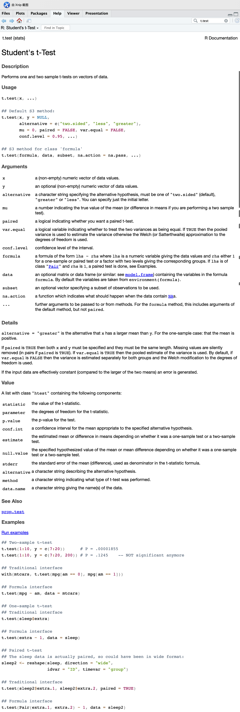
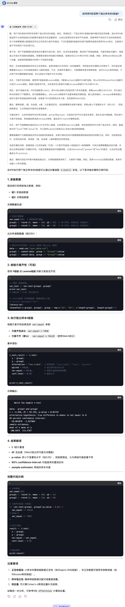
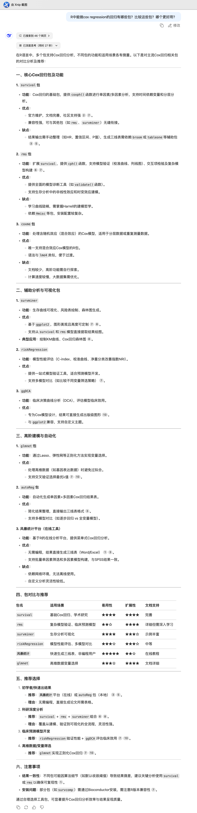
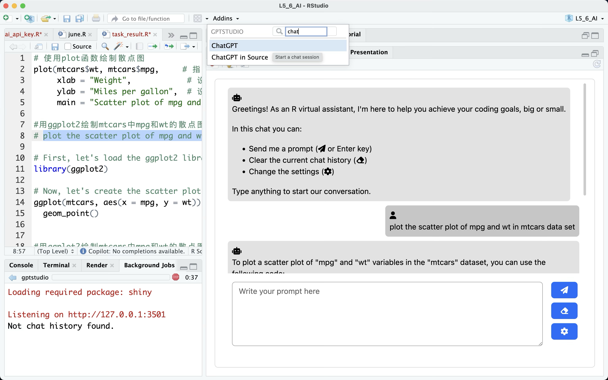
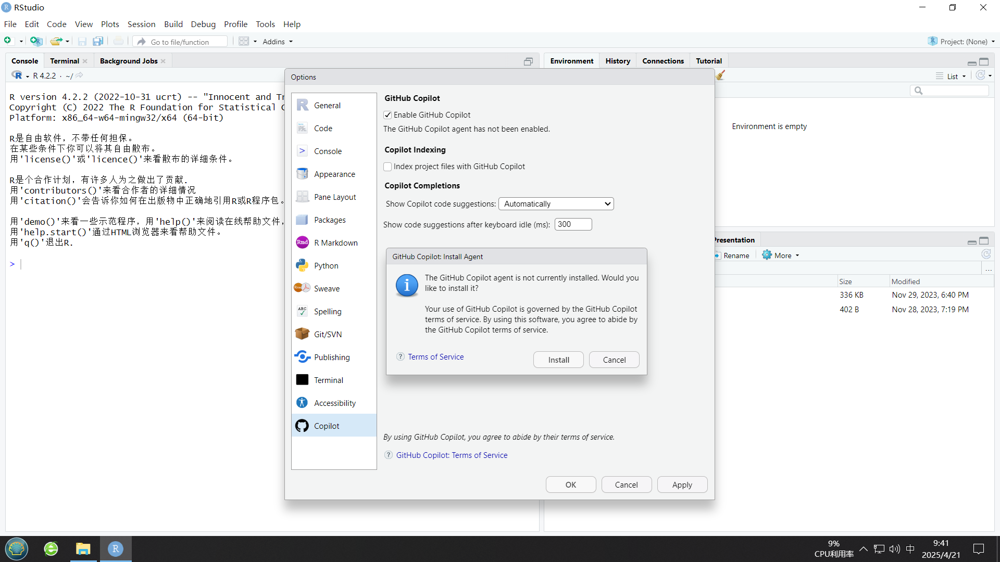
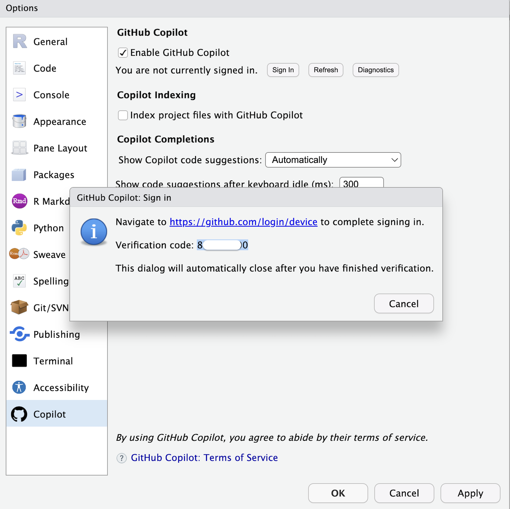
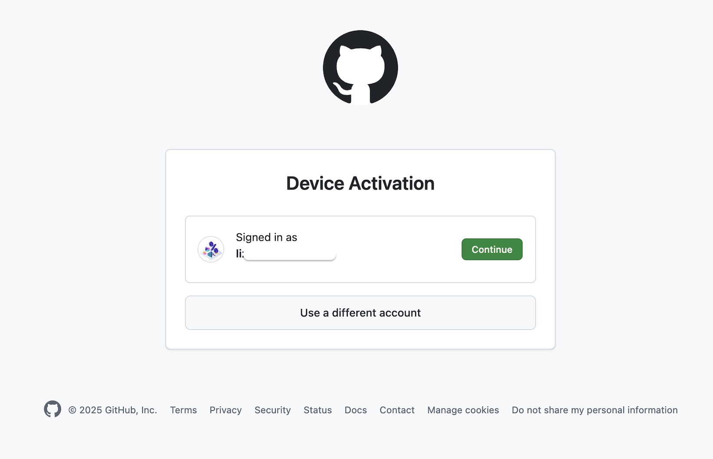
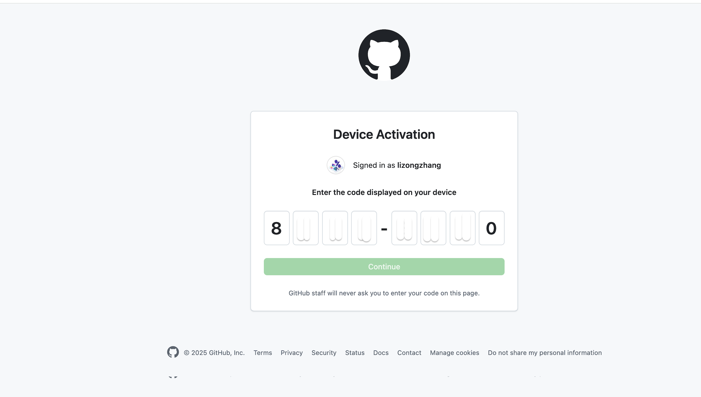
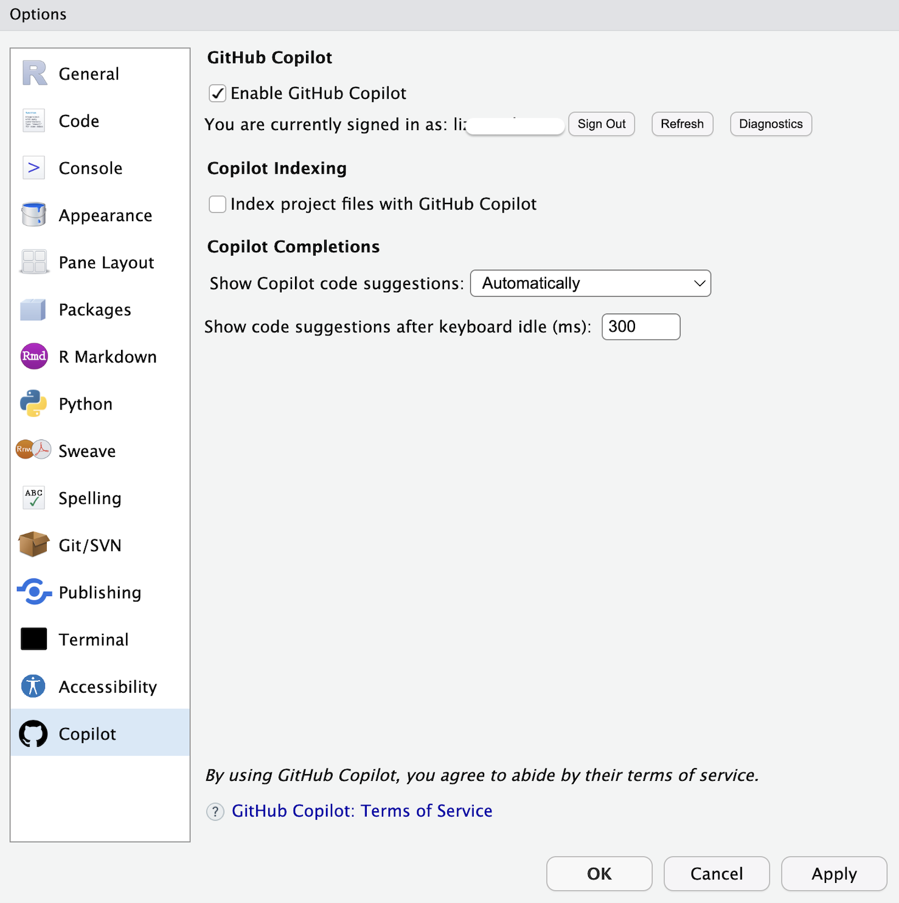
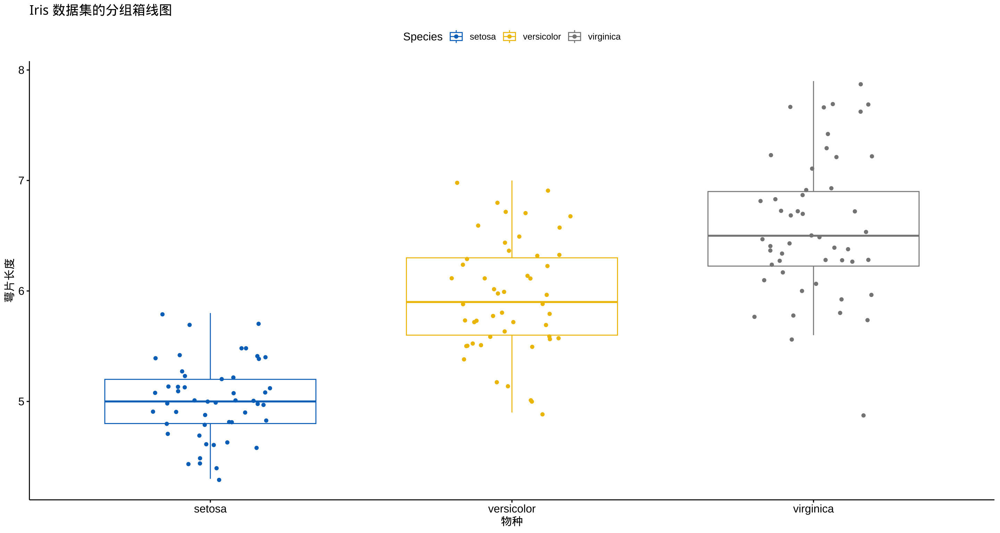

2025-04-23
10.1 DeepSeek辅助R语言快速入门
10.2 R语言编程特点
10.3 R语言接入AI
10.4 DeepSeek辅助R语言统计分析
10.5 DeepSeek辅助R语言学习
10.1.1 为什么用DeepSeek学R？
10.1.2 人人都能用R了！一个简单的示例
10.1.3 DeepSeek教不会什么？这几点你得自己掌握
R语言是一门强大但语法灵活的编程语言，对初学者有一定门槛。
DeepSeek具备自然语言理解与代码生成能力：
快速生成代码
解释代码, 报错寻因, 解读结果
扩展功能包、实现复杂流程
进入“AI辅助编程”时代，将改变R语言的学习方式，从”查命令”转为”提问题”。
Book：Wickham H, Grolemund G. R for data science, R for Data Science (2e) https://r4ds.hadley.nz/
Book：Wickham H, ggplot2: Elegant Graphics for Data Analysis (3e) https://ggplot2-book.org/
查看R帮助
搜索引擎
自然语言驱动，降低编程门槛
目标导向学习，突出“做事”而非“记语法”
学习者只需描述“我想要分析…”，DeepSeek便可完成：
数据清洗/统计分析/结果解读
实时解释与错因分析，促进理解
解释代码/诊断报错/优化代码
支持复合任务，一步生成完整工作流


🧭 提示语: 用iris数据，进行方差分析，给出R代码。
RStudio主界面
如何高效管理文件？
在写R代码的实践中积累的“经验”
📚 如何读懂 R 的帮助文档
📚 如何写一段”漂亮聪明”的代码
简洁/可复制性
美观/易读(代码注释、分节)
📚 如何用最少的代码完成最多的任务
编程思维的形成
学习高手写的代码
赋值符用<-, 不用=。=只用于函数参数的赋值
逗号后面空格，逗号前不空格(与英文句子中逗号的使用一致)
=、==、+、-、<-, ~, %>%，｜等用空格包围
具有高优先级的运算符包括：::、:::、$、@、[、[[、^，不用空格包围
一行代码不要太长
免费
可重复性
扩展包
R包下载排行榜: https://www.r-pkg.org/
学术前沿
入门难
代码容易忘
包太多/难以选择
报错
🧭 提示语：比较可以实现XXX分析的包，哪个最好？

RStudio插件{gptstudio}
需要设置API key(新用户5美元额度，之后按token计费)/科学上网/响应速度不稳定
不推荐
Github Copilot
由GitHub和OpenAI合作开发, 2021年6月发布
2023年9月接入RStudio
代码自动完成
自动生成注释
适应性学习

创建账号：https://github.com/features/copilot
学生/教师可申请加入 GitHub Education：https://github.com/education
可免费使用Github Copilot





键入代码时，Copilot将根据上下文和您的输入提供自动建议。
接受建议： 按 Tab 键接受建议并将其插入到代码中。
拒绝建议： 继续输入代码，Copilot 会自动更新建议。
支持中文
给代码添加注释
10.4.1 先看看R能做什么？
10.4.2 绘图
10.4.3 检验
10.4.4 建模
10.4.5 表格化输出
10.4.6 如何让DeepSeek分析自己的数据？
🧭 提示语：R中有哪些数据集可以做XX分析？
查看R中的自带的数据集
R中什么包可以做生存分析？这个包中可以做生存分析的数据有哪些？
🧭 提示语：利用iris数据，可以开展哪些统计分析，写出R代码。
🧭 绘图提示语
用R绘制iris的箱线图
按species定性变量分组，绘制petal.length的箱线图。
按species分组，绘制箱线图，用ggplot2绘制。
让上述多个个图形显示在同一窗口。
绘制具有学术期刊风格的分组箱线图。
用ggpubr绘制分组箱线图。
DeepSeek输出的代码
继续追问，提出对图形细节上的要求，DeepSeek修改前一段代码。
# 加载所需的包
library(ggpubr)
# 使用内置的 iris 数据集
data(iris)
# 绘制分组箱线图
ggboxplot(iris, x = "Species", y = "Sepal.Length",
color = "Species", palette = "jco",
add = "jitter",
main = "Iris 数据集的分组箱线图",
xlab = "物种", ylab = "萼片长度") +
stat_compare_means(comparisons = list(c("setosa", "versicolor"), c("versicolor", "virginica")),
method = "t.test",
label = "p.format",
hide.ns = TRUE) 检验：目的/数据容量/数据类型和分布/原假设和备择假设/局限/结论
🧭 提示语
按species分组，检验不同组别的petal.length的均值是否相等？。
该数据满足ANOVA检验的适用条件吗？
每个组别内的petal.length观测值是否近似正态分布？
如何进行方差齐性检验是什么？
bartlett.test()函数的结果如何看？
若不同组别之间的petal.length观测值方差不等，还能用ANOVA检验吗？
Welch’s ANOVA的命令是什么？
模型：目的/数据容量/数据类型和分布/估计结果的解释/可视化工具/评估
🧭 提示语
描述判别函数适合的研究场景？
利用iris数据，开展判别分析，写出R代码，并添加注释。
判别分析中需要做哪些检验？
判别分析中有哪些可视化工具？
如何评估判别分析模型？
有哪些前沿方法可以替代判别分析？R中有哪些包可以实现这类前沿方法？
🧭 提示语
利用iris数据，如何输出学术论文中的表1（描述性统计表）？
利用mpg数据，如何输出学术论文中的回归估计结果的表格？
利用survival包中的数据lung，输出学术论文中的基线特征表？
利用survival包中的数据lung，用表格报告Cox比例风险模型的估计结果？
用别的更简便的方法吗？用专门的包实现表格化输出吗？
🧭 提示语: 我有实验组和对照组各10人的服药后7天，14天和21天的血压数据，可以开展什么统计分析，来判断药物是否有效？
🧭 提示语: 请在R中生成上述模拟数据，及实现Repeated Measures ANOVA的代码？
数据脱敏
数据扰动: 给定量变量增加一个5%的随机扰动
随机抽样 30% ~ 70%： =rand() 然后排序 (Excel)
10.5.1 理解消化代码
10.5.2 代码细节的追问
10.5.3 解决报错
10.5.4 简化/美化代码
10.5.5 整理代码/重复利用
逐行阅读代码并理解每个函数
逐步运行代码, 理解输出结果
理解复杂符号，如管道符, [[]], 占位符.等
测试不同的参数
让DeepSeek辅助理解函数帮助
赋值符<- 和 等于= 的区别？
%>% 和 ｜> 的区别？
典型报错错：“未找到函数”、“对象未定义”、“无法读取文件”等
查看环境：确保对象存在
加载相关包
函数输入的参数的类型错误
复制Console中的代码及报错, 发送给DeepSeek
使用适当的命名
避免使用不必要的中间变量
避免重复代码
格式化和缩进
把代码发送给AI，简化我的代码？
iris数据的支持向量机分析
Support Vector Machine，简称SVM
糖尿病类型的支持向量机分析
从R自带数据过渡到模拟数据，再过渡到自己的真实数据
🧭 提示语: 基于iris数据，开展支持向量机分析，给出R代码?
🧭 提示语: 创建 500 个糖尿病患者的模拟数据，包括患者的年齢，BMI，血糖，胰岛素，腰围，锻炼，饮食，饮酒和吸烟习惯，糖尿病类型（1型，2型和隐性糖尿病型）。
DeepSeek输出的代码
# 1. 加载必要包
library(e1071) # SVM实现
library(caret) # 数据分割与模型评估
library(ggplot2) # 可视化
# 2. 数据准备
data(iris) # 加载数据集
set.seed(123) # 设定随机种子
# 查看数据结构
head(iris)
summary(iris)
# 划分训练集（70%）和测试集（30%）
train_index <- createDataPartition(iris$Species, p = 0.7, list = FALSE)
train_data <- iris[train_index, ]
test_data <- iris[-train_index, ]
# 3. 训练SVM模型
svm_linear <- svm(Species ~ .,
data = train_data,
kernel = "linear",
cost = 1)
summary(svm_linear)
# 4. 模型评估
pred_linear <- predict(svm_linear, test_data)
# 计算准确率
cat("线性核准确率:\n")
print(confusionMatrix(pred_linear, test_data$Species))🧭 提示语: 创建 500 个糖尿病患者的模拟数据，包括患者的年齢，BMI，血糖，胰岛素，腰围，锻炼，饮食，饮酒和吸烟习惯，糖尿病类型（1型，2型和隐性糖尿病型）。
DeepSeek输出的代码
# 设置随机种子
set.seed(42)
# 创建 500 个糖尿病患者的模拟数据
n <- 500
# 模拟数据：使用 replicate 简化生成过程
diabetes <- data.frame(
age = sample(18:80, n, replace = TRUE),
bmi = runif(n, 18.5, 40),
glucose = runif(n, 70, 200),
insulin = runif(n, 5, 30),
waist = runif(n, 70, 130),
exercise = sample(c(0, 1), n, replace = TRUE),
diet = sample(c(0, 1), n, replace = TRUE),
alcohol = sample(c(0, 1), n, replace = TRUE),
smoking = sample(c(0, 1), n, replace = TRUE),
type = sample(c("Type1", "Type2", "LADA"), n, replace = TRUE)
)
# 查看数据的前几行
head(diabetes)DeepSeek如何助力R语言统计分析？
DeepSeek如何助力R语言学习？
Github Copilot如何接入RStudio？
DeepSeek不擅长教的，需要你主动学习的
AI助力，让R语言学习变得简单、高效、充满乐趣！
AI助力, 形成编程思维, 独立实践才是用好R的关键。
高质量的提问，源自对R的深度使用。
感谢大家的参与！欢迎提问交流！
https://lizongzhang.github.io/deepseekcamp
© 2025 顶刊研习社